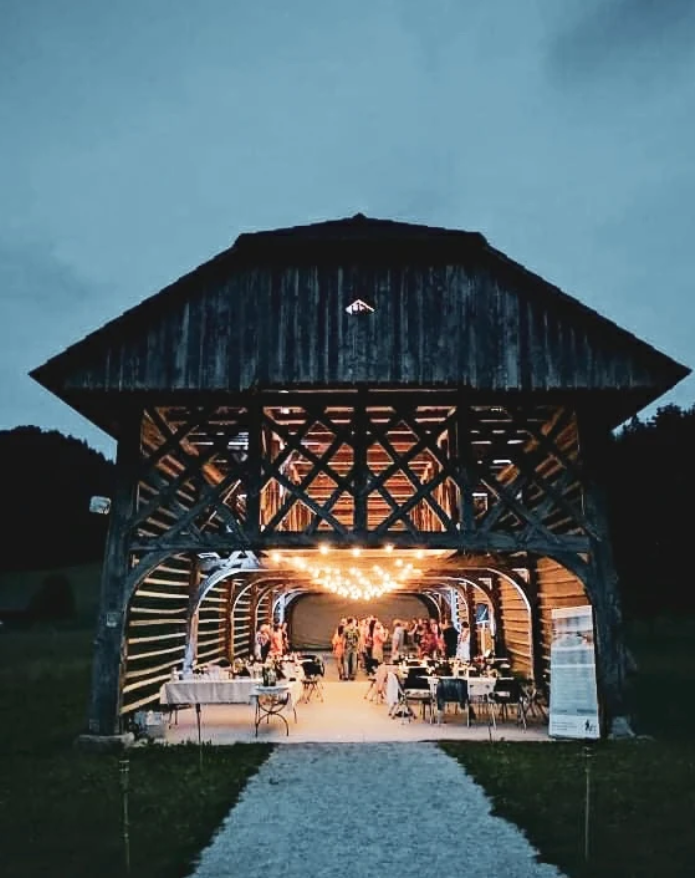
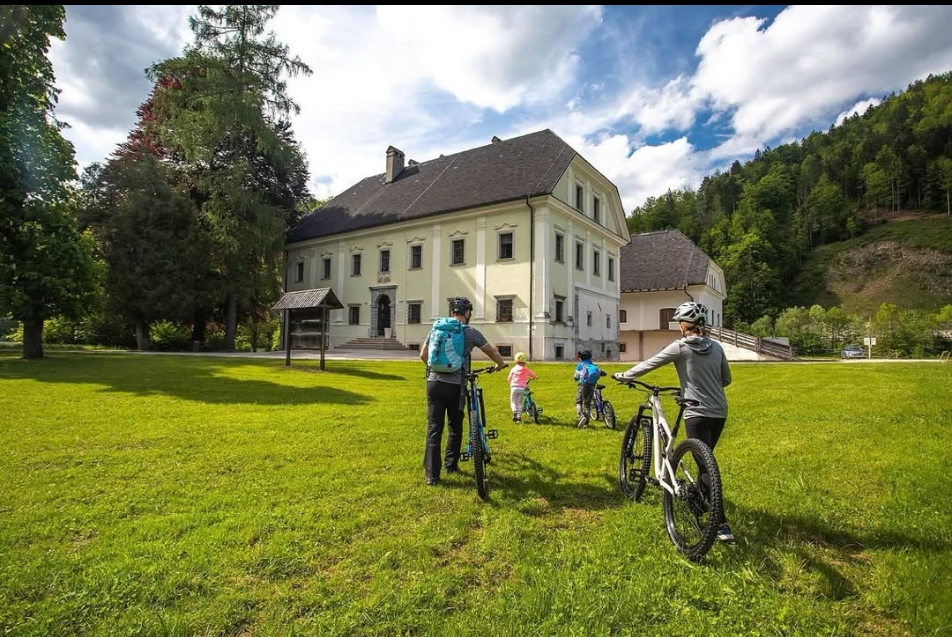

Muzejske razstave
V nadstropju dvorca si v sodelovanju z Loškim muzejem oglejte štiri stalne zbirke o Kalanovem rodu, Ivanu in Franji Tavčar ter kuhinji 19. stoletja.
Ob skodelici kave
Kavarna je le izhodišče — dvorec in njegova okolica ponujata popoldne zgodovine, narave in miru.
V nadstropju dvorca si v sodelovanju z Loškim muzejem oglejte štiri stalne zbirke o Kalanovem rodu, Ivanu in Franji Tavčar ter kuhinji 19. stoletja.
Mogočen kozolec s šestimi polji iz leta 1863, obnovljen z novo strešno kritino, stoji tik ob dvorcu.
Obnovljena kapela z grobnico in bronast spomenik pisatelju sredi urejenega parka.
Travnato igrišče na mestu, kjer je dr. Tavčar uredil prvo teniško igrišče v takratni državi. Danes gostuje tudi vsakoletni dogodek Tenis v belem.
Vrt ob kavarni, iz katerega jemljemo zelišča in cvetlice za našo ponudbo.
Poljanska Sora in griči Poljanske doline vabijo na sprehod pred ali po postanku pri nas.

Iz leta 1863
Mogočen kozolec s šestimi polji je bil obnovljen z novo strešno kritino in stoji tik ob dvorcu — priljubljen motiv za fotografije obiskovalcev.

Z vetrom v laseh
Štiri električna kolesa vas čakajo za raziskovanje Poljanske doline. Na dvorcu dobite tudi zemljevida občinskega pohodnega in kolesarskega kroga.
Rezervirajte kolo →